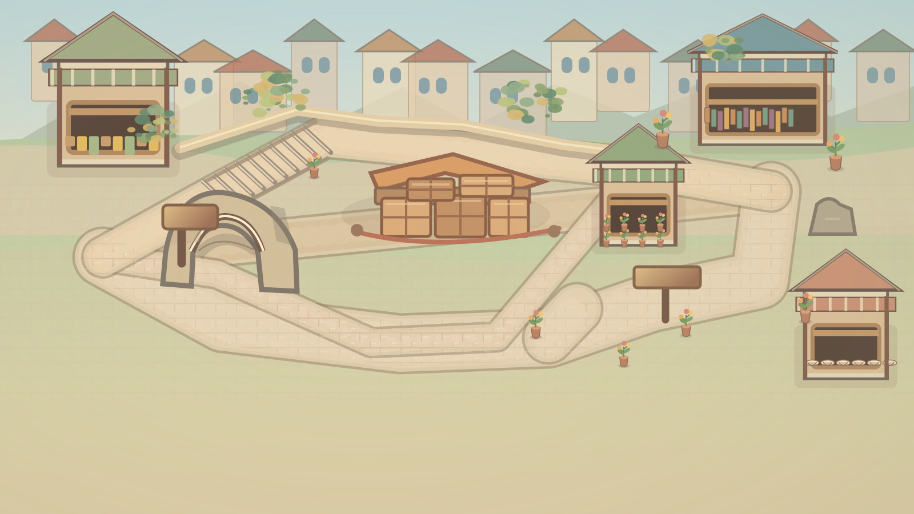

Simulated dialogue dock — actual game layout not tested
Engineering/reference preview only: no actual episode controls, no C01 actors, no approval or device PASS.
Check route continuity, shop access points, temporary unloading, crop and overlap. This page uses the exact standalone layered R2 SVG, with a simulated RPG bottom dock; game-engine behavior must be tested separately.

For landscape mode the 1600×900 drawing is proportionally scaled into the viewport. In portrait, geometry uses fit-contain/letterboxing rather than distorting the scene; controls still require a future dedicated portrait layout.
Node markers are diagnostic, not shipping UI. Three deliveries: Hub→Bookstall (stairs/arcade/outer footpaths), Hub→Tea porch (wide level cart route), Hub→Flower stand (level spur). No one crosses the unloading area.